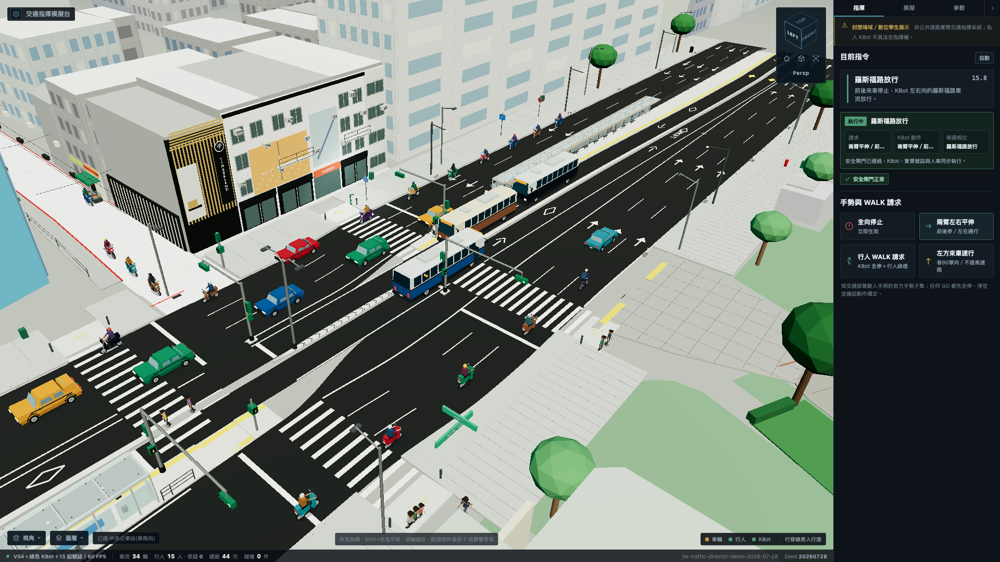

Gongguan Digital Twin
台北公館路口(羅斯福路 × 舟山路 × 巷90)的數位孿生,一台人形機器人 KBot 站在路口指揮交通。車道、斑馬線、公車月台、停止線全部從實測的 Blender 場景幾何量出來。純前端、零 CDN、完全離線可跑。

| 旋轉視角 | 左鍵拖曳 |
| 平移視角 | Shift + 左鍵拖曳,或右鍵拖曳 |
| 縮放 | 滾輪 |
| 聚焦選取物 | 點選物件後按 F,或雙擊 |
| 切換正視角 | 右上角 ViewCube 的六個面 |
ViewCube、10 個預設視角、5 種相機模式、物件選取與平滑聚焦、6 個圖層開關。 所有視角切換都是 620 ms 緩動過渡。
交通部駕駛人手冊的官方手勢子集、五相位循環含黃燈尾段、公車專用道與靠站、 行人交錯式穿越、機車兩段式左轉。
車速、車流量、相位秒數、跟車間距、KBot 勤務、外觀配色都能即時調。 可存成 JSON 或複製成程式碼片段。
機器人的手勢與走路不是手 K 的關鍵影格,是 MuJoCo 位置控制動力學生成後 烘焙回 GLB 的。